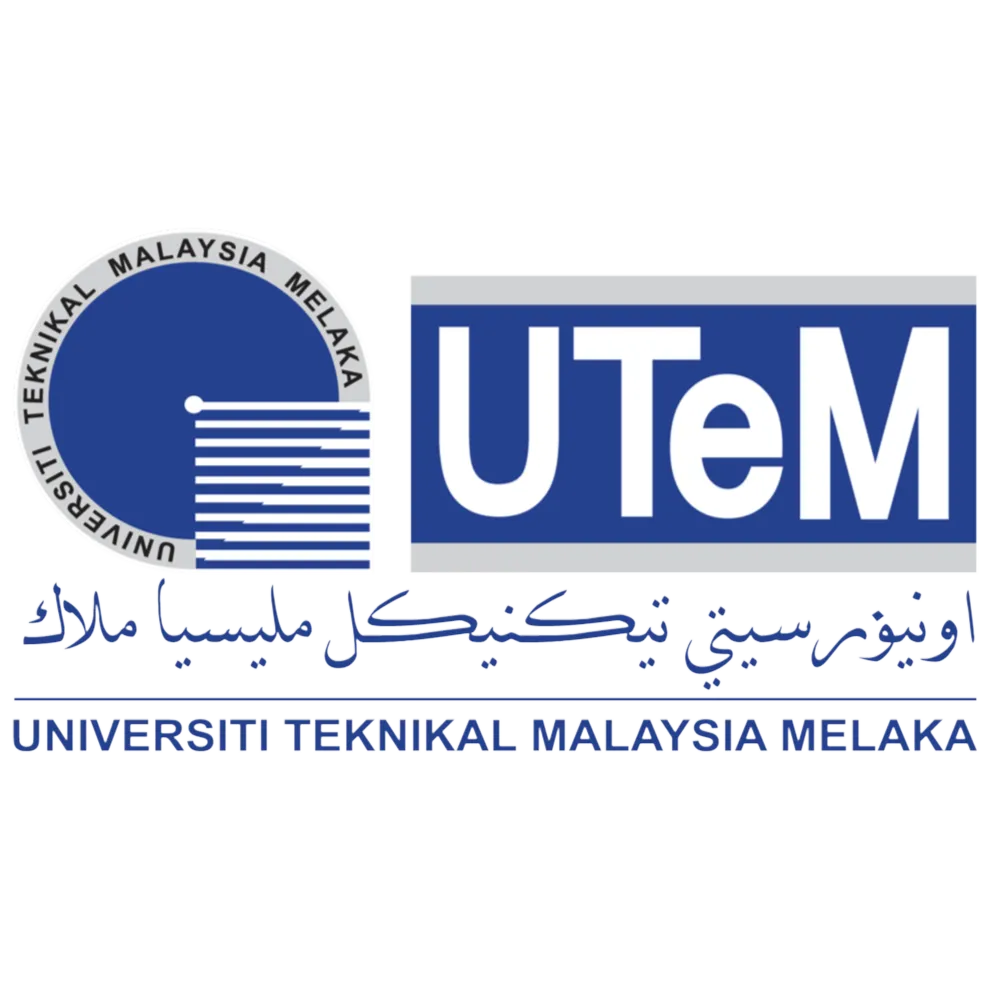
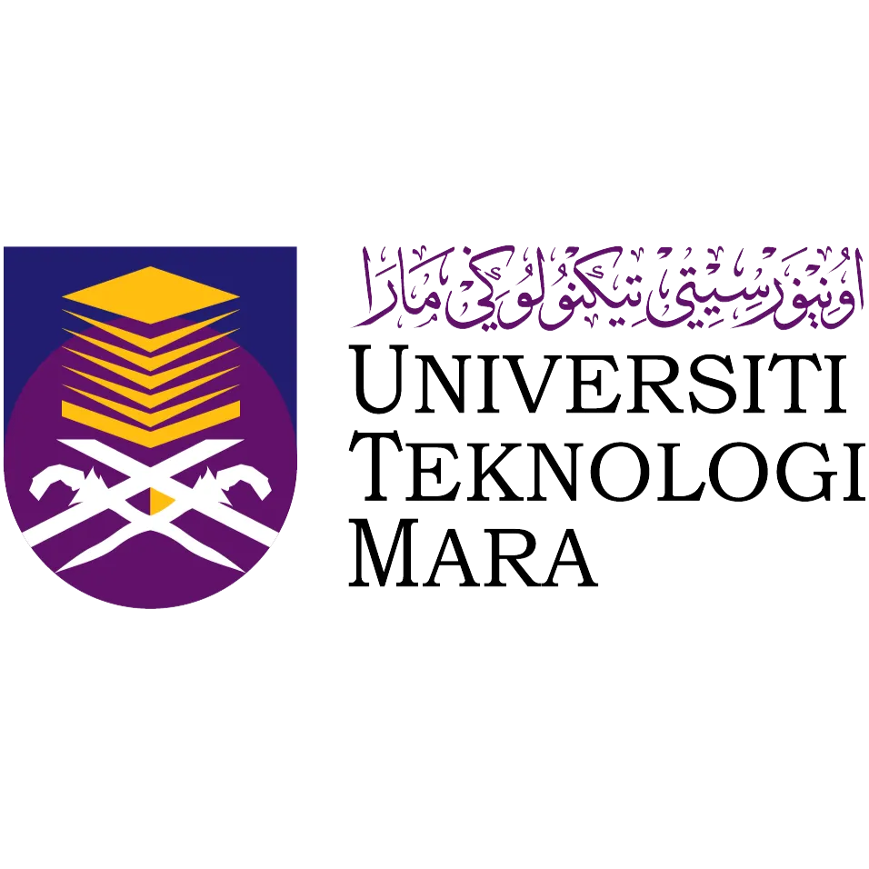
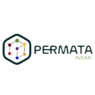

Bachelor of Information Technology, Game Technology
Oct 2022 - Now | CGPA: 3.7
Activities and Societies:
Positions: President of IMC, Exco Multimedia of UROC
Skills: Leadership Monetization Game Development Modelling

Foundation degree, Engineering
Jul 2021 - Aug 2022 | CGPA: 3.7
Activities and Societies: Persatuan Silat, Creations de UiTM
Skills: C/C++ Research DaVinci Resolve

Malaysian Certificate of Education (SPM), Applied Science
Jan 2016 - Nov 2020 | SPM: 6A 5B
Activities: Pasukan Kadet Bomba, STEM, Olahraga, Badminton
Skills: Research